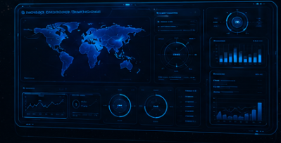

Monitoramento em tempo real
Acompanhe operações, satélites e estações receptoras com alta precisão operacional.
Onde o sol nunca se põe
Plataforma inteligente para monitoramento, controle e otimização de sistemas Space-Based Solar Power (SBSP).
Saiba maisAcompanhe operações, satélites e estações receptoras com alta precisão operacional.
Otimize o fluxo de energia com dados em tempo real e inteligência analítica.
Integração moderna para infraestrutura SBSP escalável, segura e sustentável.
O Prepila Dyson é uma plataforma especializada em monitoramento, controle e inteligência operacional para ecossistemas de Space-Based Solar Power.
Unimos observabilidade em tempo real, análise estratégica e otimização contínua para elevar a eficiência energética com segurança e previsibilidade.
Alguma duvida?